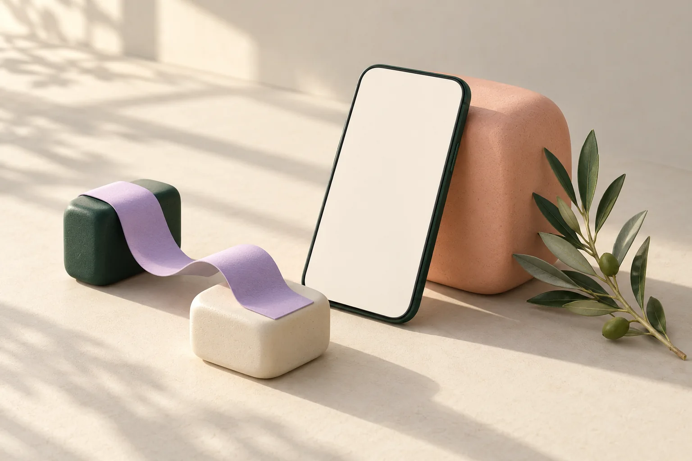

A little less scattered.
The details of life live in different places. Start by seeing how they belong together.
with a little more help.
A LITTLE MORE HELP. A LITTLE MORE ROOM.
Plans, paperwork, the things you meant to remember. It can be a lot to hold.
stoqnist. explores a calmer way to bring those pieces together — so the next small step feels easier to see.
Discover the idea
THE STOQNIST. IDEA
Imagine the useful parts of your day in one place: what’s coming up, what needs a second look, and what can wait.
Not another list to keep up with. A little perspective, and a practical place to begin.
A service concept in progress. The stories below show the direction, not a service you can sign up for yet.
FROM SCATTERED TO A LITTLE CLEARER
Three principles behind the experience we’re exploring.
The details of life live in different places. Start by seeing how they belong together.
A missing detail deserves a question. The idea is to make uncertainty visible, not turn a guess into a fact.
Some days have more room than others. Focus on one useful thing, and let the rest wait.
A SMALL WINDOW INTO THE IDEA
Meet Alex, a fictional character coming home after an injury. Explore how everyday support could feel when there’s less energy to spare.
Step into the storyA scripted showcase. No account. Nothing to connect.
THE SHOWCASE / ALEX’S DAY
Fictional walkthrough · No live AI · No sign-in. This demo does not assess your health, give medical advice or monitor emergencies. Safety & limits · Privacy
A MOMENT FOR YOU
Choose a mood for Alex, our fictional character.
One tap is enough. You can skip this.
Mood and energy are separate. Neither is a health assessment.
Try a lower-energy day to see what can wait.
Follow-up: Friday, 10:00. Bring questions for the care team.
Source: fictional appointment note, Day 01. Treatment instructions are not included in this demo. Energy choices never change clinical instructions or appointments.
Prepare a short request for help with the shopping.
“Could you help with a small grocery run this week? I’ll share the list separately.”
Draft only. Nothing sent. No health details included.
A scripted product concept. Choices stay in this page and reset on reload. No notifications are scheduled and no real records change.
A SECOND SHOWCASE / THE DETAILS
02 / ONE CONSOLIDATED RESULT
Matching amounts alone do not prove that a receipt and a bank payment belong together.
Proposals only. No records have been changed.
This fictional preview explores organisation and practical support. It does not diagnose, recommend treatment, assess symptoms, change medication, or determine whether you need care. No one monitors your selections.
Follow your clinician’s instructions. If you think you need urgent care, contact the appropriate local service directly; do not wait for this demo. A mood selection is not a health result. Missing or conflicting medical information needs clarification, not a guess.
This is not an insurance product or a promise of care. Medical-device status for a future product depends on its intended purpose and functions; no certification is claimed.
The walkthrough uses invented information. Mood and energy choices stay in the current page’s memory, are not sent by the application, and reset when you reload. There is no health-record upload, account, analytics or persistent check-in storage in this demo.
The site is delivered through Cloudflare and hosted on Hetzner. These services process technical connection data, such as IP addresses, to deliver and protect the website. This is not a claim that visiting the site creates no technical records.
Do not submit personal health information through this demo or the public project repository. Real health tracking and family sharing are not enabled. A future service needs a complete privacy notice and verified data-protection arrangements before collecting health records.